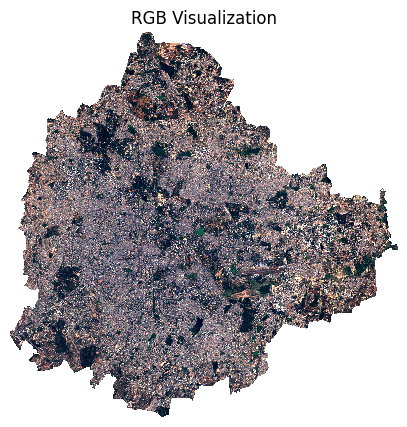
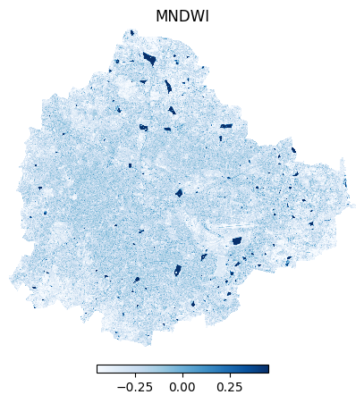
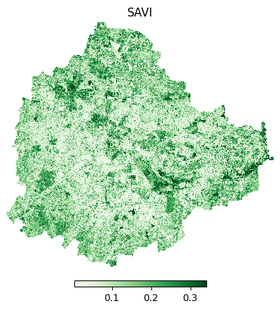

Cloud-based Remote Sensing with Python (Full Course Material)
A modern guide to working with Earth Observation dataset using XArray, Dask and STAC.
Ujaval Gandhi

Introduction
This is an advanced-level course that teaches you how to use open-source Python libraries to process earth observation dataset using cloud and parallel-computing technologies. We have designed this course to help you build the required skills in a structured way and offer flexibility in where your data is stored and how it is processed. The course is divided into 3 sections.
- Local Data Local Compute
- Cloud Data Local Compute
- Cloud Data Cloud Compute
1. Local Data Local Compute
Computing Indices

Overview
In this section, we will take a single Sentinel-2 L1C scene downloaded from the Copernicus Browser and learn how to read it using XArray, visualize it and compute spectral indices.
Setup and Data Download
The following blocks of code will install the required packages and download the datasets to your Colab environment.
%%capture
if 'google.colab' in str(get_ipython()):
!pip install rioxarray
!pip install jupyter-server-proxyimport os
import matplotlib.pyplot as plt
import xarray as xr
import rioxarray as rxr
import zipfile
import geopandas as gpddata_folder = 'data'
output_folder = 'output'
if not os.path.exists(data_folder):
os.mkdir(data_folder)
if not os.path.exists(output_folder):
os.mkdir(output_folder)def download(url):
filename = os.path.join(data_folder, os.path.basename(url))
if not os.path.exists(filename):
from urllib.request import urlretrieve
local, _ = urlretrieve(url, filename)
print('Downloaded ' + local)
s2_scene = 'S2A_MSIL1C_20230212T050931_N0509_R019_T43PGQ_20230212T065641.SAFE.zip'
data_url = 'https://storage.googleapis.com/spatialthoughts-public-data/'
download(data_url + 's2/' + s2_scene)
aoi = 'bangalore.geojson'
download(data_url + aoi)Data Pre-Processing
We first unzip the zip archive and create a XArray Dataset from the individual band images.
s2_filepath = os.path.join(data_folder, s2_scene)
with zipfile.ZipFile(s2_filepath) as zf:
zf.extractall(data_folder)Sentinel-2 images come as individual JPEG2000 rasters for each band.
The image files are located in the
GRANULE/{SCENE_ID}/IMG_DATA/ subfolder. We find the files
and read them using rioxarray.
import glob
s2_folder = s2_filepath[:-4]
band_files = {}
for filepath in glob.glob(
os.path.join(s2_folder, 'GRANULE', '*', 'IMG_DATA', '*B*.jp2')):
filename = os.path.basename(filepath)
# Extract the part of the filename containing band name such as 'B01'
band_name = os.path.splitext(filename)[0].split('_')[-1]
band_files[band_name] = filepath
band_files{'B05': 'data/S2A_MSIL1C_20230212T050931_N0509_R019_T43PGQ_20230212T065641.SAFE/GRANULE/L1C_T43PGQ_A039913_20230212T051514/IMG_DATA/T43PGQ_20230212T050931_B05.jp2',
'B8A': 'data/S2A_MSIL1C_20230212T050931_N0509_R019_T43PGQ_20230212T065641.SAFE/GRANULE/L1C_T43PGQ_A039913_20230212T051514/IMG_DATA/T43PGQ_20230212T050931_B8A.jp2',
'B07': 'data/S2A_MSIL1C_20230212T050931_N0509_R019_T43PGQ_20230212T065641.SAFE/GRANULE/L1C_T43PGQ_A039913_20230212T051514/IMG_DATA/T43PGQ_20230212T050931_B07.jp2',
'B01': 'data/S2A_MSIL1C_20230212T050931_N0509_R019_T43PGQ_20230212T065641.SAFE/GRANULE/L1C_T43PGQ_A039913_20230212T051514/IMG_DATA/T43PGQ_20230212T050931_B01.jp2',
'B12': 'data/S2A_MSIL1C_20230212T050931_N0509_R019_T43PGQ_20230212T065641.SAFE/GRANULE/L1C_T43PGQ_A039913_20230212T051514/IMG_DATA/T43PGQ_20230212T050931_B12.jp2',
'B10': 'data/S2A_MSIL1C_20230212T050931_N0509_R019_T43PGQ_20230212T065641.SAFE/GRANULE/L1C_T43PGQ_A039913_20230212T051514/IMG_DATA/T43PGQ_20230212T050931_B10.jp2',
'B08': 'data/S2A_MSIL1C_20230212T050931_N0509_R019_T43PGQ_20230212T065641.SAFE/GRANULE/L1C_T43PGQ_A039913_20230212T051514/IMG_DATA/T43PGQ_20230212T050931_B08.jp2',
'B06': 'data/S2A_MSIL1C_20230212T050931_N0509_R019_T43PGQ_20230212T065641.SAFE/GRANULE/L1C_T43PGQ_A039913_20230212T051514/IMG_DATA/T43PGQ_20230212T050931_B06.jp2',
'B04': 'data/S2A_MSIL1C_20230212T050931_N0509_R019_T43PGQ_20230212T065641.SAFE/GRANULE/L1C_T43PGQ_A039913_20230212T051514/IMG_DATA/T43PGQ_20230212T050931_B04.jp2',
'B09': 'data/S2A_MSIL1C_20230212T050931_N0509_R019_T43PGQ_20230212T065641.SAFE/GRANULE/L1C_T43PGQ_A039913_20230212T051514/IMG_DATA/T43PGQ_20230212T050931_B09.jp2',
'B02': 'data/S2A_MSIL1C_20230212T050931_N0509_R019_T43PGQ_20230212T065641.SAFE/GRANULE/L1C_T43PGQ_A039913_20230212T051514/IMG_DATA/T43PGQ_20230212T050931_B02.jp2',
'B11': 'data/S2A_MSIL1C_20230212T050931_N0509_R019_T43PGQ_20230212T065641.SAFE/GRANULE/L1C_T43PGQ_A039913_20230212T051514/IMG_DATA/T43PGQ_20230212T050931_B11.jp2',
'B03': 'data/S2A_MSIL1C_20230212T050931_N0509_R019_T43PGQ_20230212T065641.SAFE/GRANULE/L1C_T43PGQ_A039913_20230212T051514/IMG_DATA/T43PGQ_20230212T050931_B03.jp2'}Different Sentinel-2 bands have different spatial resolutions. To put them in the same array, their dimensions must match. So we combine bands of similar resolutions and resample others to match them.
- B04, B03, B02 and B08 = 10m
- B12, B11, B07, B06, B05 and B08A = 20m
- B10, B09, B1 = 60m
b4 = rxr.open_rasterio(python-remote-sensing-output/band_files['B04'], chunks=True)
b3 = rxr.open_rasterio(python-remote-sensing-output/band_files['B03'], chunks=True)
b2 = rxr.open_rasterio(python-remote-sensing-output/band_files['B02'], chunks=True)
b8 = rxr.open_rasterio(python-remote-sensing-output/band_files['B08'], chunks=True)
stack1 = xr.concat([b4, b3, b2, b8], dim='band').assign_coords(
band=['B04', 'B03', 'B02', 'B08'])b5 = rxr.open_rasterio(python-remote-sensing-output/band_files['B05'], chunks=True)
b6 = rxr.open_rasterio(python-remote-sensing-output/band_files['B07'], chunks=True)
b7= rxr.open_rasterio(python-remote-sensing-output/band_files['B07'], chunks=True)
b8a = rxr.open_rasterio(python-remote-sensing-output/band_files['B8A'], chunks=True)
b11 = rxr.open_rasterio(python-remote-sensing-output/band_files['B11'], chunks=True)
b12 = rxr.open_rasterio(python-remote-sensing-output/band_files['B12'], chunks=True)
stack2 = xr.concat([b5, b6, b7, b8a, b11, b12], dim='band').assign_coords(
band=['B05', 'B06', 'B07', 'B8A', 'B11', 'B12'])Now we reproject the bands to match the resolution of the 10m bands
using reproject_match()
Both band stacks now have the same resolution and hence the same X
and Y dimensions. We can now combine them across the band
dimension. The Sentinel-2 scenes come with NoData value of 0. So we set
the correct NoData value before further processing.
We will clip the scene to the geometry of the GeoJSON file. We must ensure that the projection of the GeoDataFrame and the XArray DataArray match.
aoi_path = os.path.join(data_folder, aoi)
aoi_gdf = gpd.read_file(aoi_path)
geometry = aoi_gdf.to_crs(scene.rio.crs).geometry
clipped = scene.rio.clip(geometry)
clippedSentinel-2 pixel values need to be converted to reflectances using the following formula:
ρ = (L1C_DN + RADIO_ADD_OFFSET) / QUANTIFICATION_VALUE
QUANTIFICATION_VALUE for all S2 scenes is
10000 and starting from January 22,2023, all new scenes
have a RADIO_ADD_OFFSET of -1000
Visualization
We can visualize a 3-band composite image.
fig, ax = plt.subplots(1, 1)
fig.set_size_inches(5,5)
scaled.sel(band=['B04', 'B03', 'B02']).plot.imshow(
ax=ax,
robust=True)
ax.set_title('RGB Visualization')
ax.set_axis_off()
plt.show()
fig, ax = plt.subplots(1, 1)
fig.set_size_inches(5,5)
scaled.sel(band=['B08', 'B04', 'B03']).plot.imshow(
ax=ax,
robust=True)
ax.set_title('NRG Visualization')
ax.set_axis_off()
plt.show()
Calculating Indices
Let’s visualize the results.
fig, ax = plt.subplots(1, 1)
fig.set_size_inches(5,5)
ndvi.plot.imshow(
ax=ax,
cmap='Greens',
robust=True,
cbar_kwargs=cbar_kwargs)
ax.set_title('NDVI')
ax.set_axis_off()
plt.show()
green = scaled.sel(band='B03')
swir1 = scaled.sel(band='B11')
mndwi = (green - swir1)/(green + swir1)fig, ax = plt.subplots(1, 1)
fig.set_size_inches(5,5)
mndwi.plot.imshow(
ax=ax,
cmap='Blues',
robust=True,
cbar_kwargs=cbar_kwargs)
ax.set_title('MNDWI')
ax.set_axis_off()
plt.show()/usr/local/lib/python3.10/dist-packages/distributed/client.py:3160: UserWarning: Sending large graph of size 328.52 MiB.
This may cause some slowdown.
Consider scattering data ahead of time and using futures.
warnings.warn(
red = scaled.sel(band='B04')
nir = scaled.sel(band='B08')
savi = 1.5 * ((nir - red) / (nir + red + 0.5))fig, ax = plt.subplots(1, 1)
fig.set_size_inches(5,5)
savi.plot.imshow(
ax=ax,
cmap='Greens',
robust=True,
cbar_kwargs=cbar_kwargs)
ax.set_title('SAVI')
ax.set_axis_off()
plt.show()
Saving the results
Exercise
Calculate the Normalized Difference Built-Up Index (NDBI) for the image and visualize the built-up area using a ‘red’ palette
Hint: NDBI = (SWIR1 – NIR) / (SWIR1 + NIR)
2. Cloud Data Local Compute
Calculating Zonal Statistics

Overview
Zonal Statistics is used to summarises the values of a raster dataset within the zones of a vector dataset. Here we select all Admin1 units of a country and calculate a sum of nighttime light pixel intensities over multiple years. This is a large computation that is enabled by cloud-hosted NightTime Lights data in the Cloud-Optimized GeoTIFF (COG) format and parallel computing on a local dask cluster.
Setup and Data Download
The following blocks of code will install the required packages and download the datasets to your Colab environment.
%%capture
if 'google.colab' in str(get_ipython()):
!apt install libspatialindex-dev
!pip install fiona shapely pyproj rtree
!pip install geopandas
!pip install rioxarray
!pip install regionmaskimport os
import glob
import pandas as pd
import geopandas as gpd
import numpy as np
import xarray as xr
import rioxarray as rxr
import matplotlib.pyplot as plt
from datetime import datetime
import dask
import regionmaskimport warnings
import rasterio
warnings.filterwarnings("ignore", category=rasterio.RasterioDeprecationWarning)from dask.distributed import Client, progress
client = Client() # set up local cluster on the machine
clientdask.config.set({"array.slicing.split_large_chunks": False})
dask.config.set({'array.chunk-size': '32MiB'})data_folder = 'data'
output_folder = 'output'
if not os.path.exists(data_folder):
os.mkdir(data_folder)
if not os.path.exists(output_folder):
os.mkdir(output_folder)def download(url):
filename = os.path.join(data_folder, os.path.basename(url))
if not os.path.exists(filename):
from urllib.request import urlretrieve
local, _ = urlretrieve(url, filename)
print('Downloaded ' + local)
admin1_zipfile = 'ne_10m_admin_1_states_provinces.zip'
admin1_url = 'https://naciscdn.org/naturalearth/10m/cultural/'
download(admin1_url + admin1_zipfile)Data Pre-Processing
First we will read the GDL shapefile and filter to a country. The
‘adm1_code’ column contains a unique id for all the counties present in
the state, but it is of object type. We need to convert it
to int type to be used in xarray.
country_code = 'LK'
admin1_file_path = os.path.join(data_folder, admin1_zipfile)
admin1_df = gpd.read_file(admin1_file_path)
zones = admin1_df[admin1_df['iso_a2'] == country_code][['adm1_code', 'name', 'iso_a2', 'geometry']].copy()
zones['id'] = zones.reset_index().index + 1
zonesNext we read the NTL files and create an XArray object.
These files were download from Harvard Dataverse and converted to Cloud-Optimized GeoTIFFs using GDAL.
Example command
gdalwarp -of COG -co COMPRESS=DEFLATE -co PREDICTOR=2 -co NUM_THREADS=ALL_CPUS 2021_HasMask/LongNTL_2021.tif 2021.tif -te -180 -90 180 90 -dstnodata 0
The resulting files are now hosted on a Google Cloud Storage bucket.
ntl_folder = 'https://storage.googleapis.com/spatialthoughts-public-data/ntl/npp_viirs_ntl'
da_list = []
for year in range(start_year, end_year + 1):
cog_url = f'{ntl_folder}/{year}.tif'
da = rxr.open_rasterio(
cog_url,
chunks=True).rio.clip_box(*bbox)
dt = pd.to_datetime(year, format='%Y')
da = da.assign_coords(time = dt)
da = da.expand_dims(dim="time")
da_list.append(da)Zonal Stats
Now we will extract the sum of the raster pixel values for every admin1 region in the selected countrey.
First, we need to convert the GeoDataFrame to a XArray Dataset. We
will be using the regionmask module for that. It takes
geodataframe, it’s unique value as integer and converts the geodataframe
into a xarray dataset having dimension and coordinates same
as of given input xarray dataset
# Create mask of multiple regions from shapefile
mask = regionmask.mask_3D_geopandas(
zones,
ntl_datacube.x,
ntl_datacube.y,
drop=True,
numbers="id",
overlap=True
)Finally, we save the result to disk.
Exercise
Change the code to calculate the Zonal Statistics for all admin1 units in your chosen country.
License
This course material is licensed under a Creative Commons Attribution 4.0 International (CC BY 4.0). You are free to re-use and adapt the material but are required to give appropriate credit to the original author as below:
Cloud-basd Remote Sensing with Python Course by Ujaval Gandhi www.spatialthoughts.com
This course is offered as an instructor-led online class. Visit Spatial Thoughts to know details of upcoming sessions.
© 2023 Spatial Thoughts www.spatialthoughts.com
If you want to report any issues with this page, please comment below.